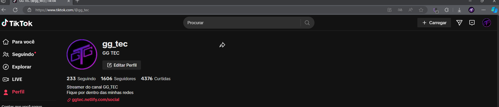
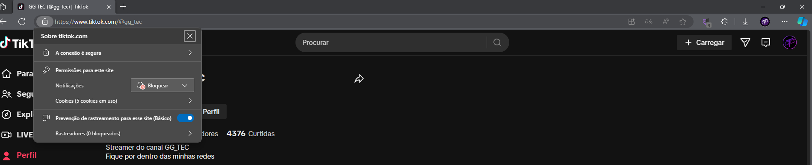
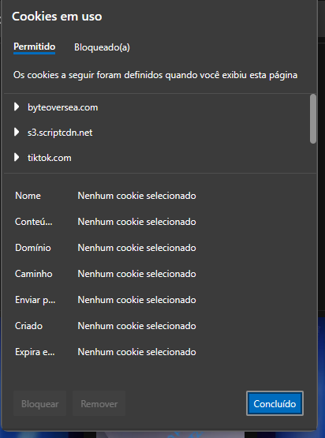
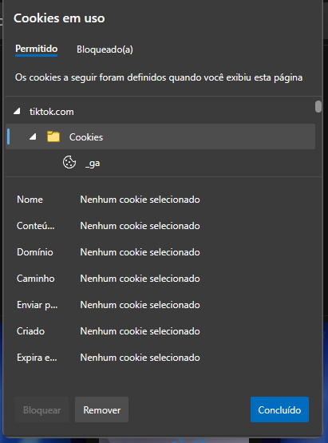
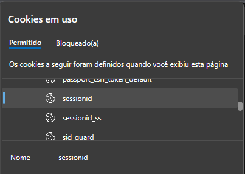
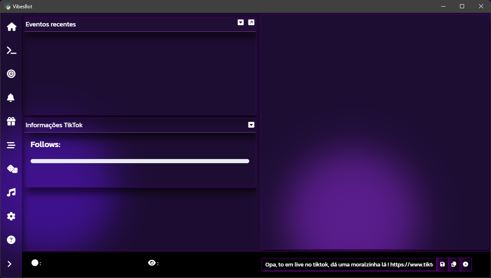

VibesBot Wiki
Siga o guia de configuração abaixo para configurar todas as funções do programa corretamente.
Este é um projeto independente e sem fins lucrativos, por isso não existe um certificado digital, o que acarreta na falsa informação de virus, para solucionar este problema é necessário uma licença de R$ 300/Ano, da qual não tenho como pagar atualmente. caso queira ajudar de alguma forma envie uma doação para https://livepix.gg/ggtec
Instruções de Download
Passo 1: Acesse o Link
Acesse o seguinte link para efetuar o download do programa: https://github.com/GGTEC/VibesBot/releases/latest
Passo 2: Baixe o Arquivo
Baixe o arquivo ".exe" na pagina da ultima versão.
Passo 3: Armazenamento
Execute o .exe e instale o programa.
Autenticação de Conta Streamer
Passo 1 - Avisos e termos
Leia atentamente todo o conteúdo da página inicial e página de termos de uso.
Passo 2 - Iniciando autenticação
Após ler e aceitar os termos será necessário inserir o seu nome de usuário e sessionId
Digite o nome da sua conta no campo especificado. Ele deve ser o mesmo que o usado na URL, por exemplo, https://www.tiktok.com/@gg_tec = gg_tec.
Passo 3 - Obtendo o sessionId
Para obter o sessionId siga os passos abaixo.
-
1. Abra o navegador EDGE, faça o login na sua conta do tiktok e permaneça na página inicial da sua conta.
 -
2. No canto superior esquerdo antes da barra de endereços clique no cadeado.
 -
3. Após abrir a janela de informações de segurança sobre o site, clique em "cookies (5 em uso), após clicar será aberta uma janela central de informações sobre os cookies do site"
 -
4. Na janela que se abriu procure por "tiktok.com" e abra a subpasta cookies."
 -
5. Agora já na pasta, procure por "sessionid", e copie todo o valor do campo conteúdo."
 -
6. Após inseridas as informações clique em login e a tela inicial do aplicativo deve ser exibida.

Criar um comando/Editar um comando
Comando:
Qual mensagem deverá ser enviada no chat para executar o comando,se preferir não é necessário o uso de prefix ex = !comando, ?comando $comando, #comando
Tempo de recarga:
Tempo necessário para esperar entre um comando e outro;
Selecione o nível de usuário para utilizar o comando:
Selecione o cargo de permissão que o usuário deve ter para utilizar o comando;
Ativar custo do comando:
Ativar custo em pontos para o usuário utilizar o comando;
Custo do comando:
Quantos pontos o usuário deve ter para utilizar o comando
Resposta no chat (em breve):
Envia a mensagem no chat do canal quando o comando for executado (em breve);
Comando para audio:
Ativa a reprodução de um audio ao executar o comando (não é recomendado a utilização de audios grandes).
Arquivo de audio .mp3
Audio que será reproduzido.
Excluir um comando
Comando:
Selecione o comando para Excluir, é possível excluir apenas comandos criados.
Comandos padrão
Comandos atuais: Texto Falado, Saldo
Texto falado: Usuário pode enviar mensagens de voz com um custo se configurado
Saldo: Usuário pode saber o seu saldo em likes, presentes, compartilhamentos.
Comandos de padrão não podem ser excluídos, somente desativados.
Comando:
Qual mensagem deverá ser enviada no chat para executar o comando,se preferir não é necessário o uso de prefix ex = !comando, ?comando $comando, #comando
Tempo de recarga:
Tempo necessário para esperar entre um comando e outro;
Permissão :
Selecione o nível de permissão que o usuário deve ter para utilizar o comando;
Ativar custo do comando:
Ativar custo em pontos para o usuário utilizar o comando;
Custo do comando:
Quantos pontos o usuário deve ter para utilizar o comando
Resposta no chat (em breve) :
Envia a mensagem no chat do canal quando o comando for executado (em breve);
Comando para audio :
Ativa a reprodução de um audio ao executar o comando (não é recomendado a utilização de audios grandes).
Comandos de música
Selecione o comando para configurar:
Selecione o comando para exibir a sessão de edição do comando, comandos de música não podem ser excluídos, somente desativados.
Comando:
Qual mensagem deverá ser enviada no chat para executar o comando, não é necessário o uso de prefix ex = !comando, ?comando $comando, #comando
Status do comando:
Altere o status do comando se deseja desativa-lo ou ativa-lo:
Tempo de recarga do comando:
Quanto tempo em segundos será necessário esperar antes de utilizar o comando novamente
Permissão:
Selecione quais permissões podem utilizar o comando. (será necessário ter apenas uma das permissões para executar);
Nota: As respostas para comandos de música podem ser configuradas a partir da aba Configurações/respostas
Ativar custo do comando:
Ativar custo em pontos para o usuário utilizar o comando;
Custo do comando:
Quantos pontos o usuário deve ter para utilizar o comando
Comandos da fila de espera
Selecione o comando para configurar:
Selecione o comando para exibir a sessão de edição do comando, comandos da fila de espera não podem ser excluídos, somente desativados.
Comando:
Qual mensagem deverá ser enviada no chat para executar o comando, não é necessário o uso de prefix ex = !comando, ?comando $comando, #comando
Status do comando:
Altere o status do comando se deseja desativa-lo ou ativa-lo:
Tempo de recarga do comando:
Quanto tempo em segundos será necessário esperar antes de utilizar o comando novamente
Permissão :
Selecione quais permissões podem utilizar o comando. (será necessário ter apenas uma das permissões para executar);
Nota: As respostas para comandos da fila de espera podem ser configuradas a partir da aba configurações/respostas
Ativar custo do comando:
Ativar custo em pontos para o usuário utilizar o comando;
Custo do comando:
Quantos pontos o usuário deve ter para utilizar o comando
Comandos de sorteio
Selecione o comando para configurar:
Selecione o comando para exibir a sessão de edição do comando, comandos de sorteio não podem ser excluídos, somente desativados.
Comando:
Qual mensagem deverá ser enviada no chat para executar o comando, não é necessário o uso de prefix ex = !comando, ?comando $comando, #comando
Status do comando:
Altere o status do comando se deseja desativa-lo ou ativa-lo:
Tempo de recarga do comando:
Quanto tempo em segundos será necessário esperar antes de utilizar o comando novamente
Permissão :
Selecione quais permissões podem utilizar o comando. (será necessário ter apenas uma das permissões para executar);
Nota: As respostas para comandos da fila de espera podem ser configuradas a partir da aba configurações/respostas
Lista de comandos
Exibe uma tabela com todos os comandos configurados no RewardEvents, seja um comando padrão ou um comando criado.
Notificações para follow
Ativar notificação
Alterna a notificação sonora quando o usuário seguir o canal.
Arquivo de audio .mp3
Audio que será reproduzido na notificação.
Volume
Volume da notificação
Notificações para likes
Ativar notificação
Alterna a notificação sonora quando o usuário enviar um like.
Delay em segundos
Tempo de delay que será enviada a notificação para cada like, necessário para evitar flood sonoro.
Arquivo de audio .mp3
Audio que será reproduzido na notificação
Volume
Volume da notificação
Notificações para Compartilhamentos
Ativar notificação
Alterna a notificação sonora quando o usuário compartilhar o link da live.
Delay em segundos
Tempo de delay que será enviada a notificação para cada like, necessário para evitar flood sonoro.
Arquivo de audio .mp3
Audio que será reproduzido na notificação.
Volume
Volume da notificação
Configuração da meta
Selecione o tipo de meta
Qual meta será configurada.
Status da meta
Ao desativar o html no overlay continuará sendo exibido, porém estático ou seja mesmo ao receber os eventos correspondentes a barra ou a numeração não serão atualizadas
Meta
Qual é o valor final da meta.
Ao completar a meta
Adicionar valor: ao completar a meta o valor especificado no campo abaixo será adicionado ao valor final da meta, assim atualizando o valor final da meta automaticamente.
Multiplicar valor: o valor final da meta será multiplicado pelo valor especificado no campo abaixo, ex. 2, a meta irá ser multiplicada por dois
Dobrar: O valor da meta será automaticamente dobrado ao chegar no final.
Executar som ao completar a meta
Quando o valor da meta for atingido será executado um som sinalizando a conclusão da meta.
Arquivo de audio .mp3
Audio que será reproduzido ao atingir a meta
Volume
Volume da notificação
Configuração da barra de progresso da meta
Selecione o tipo de meta
Qual meta será configurada.
Texto da meta
Qual será o texto exibido na barra de progresso da meta configurada.
Restantes dos itens auto explicativos, teste para verificar as alterações.Link para vincular o overlay para metas.
Copie o link e no TikTok live studio adicione uma nova fonte de navegador e cole o endereço
Recomendado iniciar o VibesBot antes do TikTok live studio para melhor funcionamento do overlay, caso contrário o overlay pode não funcionar, e nesse caso apenas altere a cena atual para outra cena e retorne.Configurar notificações para presentes.
Notificações globais
A notificação global é executada ao receber um presente se o presente recebido não tiver um audio configurado.
Notificação por presente
Procure o presente na tabela e clique em configurar, Obs: Configurando a notificação do presente especifico a notificação global não será reproduzida.
Configuração do presente
Nome de exibição do presente
Nome que será exibido no registro de eventos ao receber um presente.
Ativar notificação
Alterna a notificação sonora ao receber um presente
Arquivo de audio .mp3
Audio que será reproduzido ao receber um presente
Volume
Volume da notificação
Configuração do Sistema de Sorteios
Nome do Sorteio:
Insira o nome que será anunciado no chat quando o sorteio for habilitado.
Nível de Usuário para Entrar no Sorteio:
Selecione o nível de usuário permitido para entrar no sorteio.
Limpar Nomes ao Sortear:
Quando o sorteio for executado, os nomes da lista são limpos. Manter esta opção desmarcada é útil para mostrar os participantes em caso de reclamações ou objetivos. Um arquivo de backup dos nomes sorteados é guardado na pasta src/sorteio/.
Ativar Entrada no Sorteio:
Permite a entrada de usuários no sorteio e envia uma mensagem no chat anunciando que o sorteio foi habilitado.
Permitir Várias Entradas por Usuário:
Ativando esta opção, permite que o usuário entre mais de uma vez no sorteio, aumentando suas chances de ganhar.
Adicionar Usuário ao Sorteio
Nome do Usuário:
Insira o nome do usuário que será adicionado manualmente ao sorteio (não é necessário ser um nickname do TikTok).
Executar Sorteio:
Executa o sorteio.
Exibir Lista de Participantes:
Exibe uma lista com os nomes dos participantes do sorteio.
Limpar Lista de Participantes:
Limpa os nomes da lista do sorteio antes de executar.
Configurar fila de espera
Nota: Respostas da fila de espera podem ser configuradas a partir da aba configurações/respostas
Adicionar usuário da lista de espera
Nome do usuário:
Insira o nome do usuário/valor que deverá ser adicionado.
Fila de espera:
Tabela com os nomes/valores adicionados na fila.
Nota: remoção de usuário é possível via interface ou comando configurado na aba comandos.
Player para Pedidos de Música
Texto 1:
Nome da música atualTexto 2:
Artista da música atual (quando disponível)Botão Play/Pause:
Se pausado na metade ou fim da música, não será possível reproduzir a próxima música.Botão Playlist:
Configurações para a playlistBotão Lista:
Exibe as músicas na fila (playlist e pedidos)Playlist
Reproduzir Playlist:
Permite a execução das músicas na lista de playlist (se houver)URL da Playlist:
URL para ser adicionada às músicas da playlist (somente youtube)Limpar Playlist:
Limpa as músicas na playlistConfigurar Alertas no Discord/Chat
Foto e nome de perfil para o discord
Url da imagem do perfil:
Insira a url para ser a foto de perfil para o bloco embed do discord (somente .png).
Nome de perfil para o bloco Webhook:
Nome de perfil que será exibido no bloco embed do Webhook.
Tipos de notificações
Selecione o tipo de notificação Webhook para editar
As notificações não podem ser adicionadas nem excluídas, somente ativadas ou desativadas .
Discord
Pseudônimos/Aliases
Lista de palavras que podem ser utilizadas para enviar informações adicionais sobre o tipo de notificação em questão.
Ativar/Desativar a notificação
Selecione se deseja enviar ou não a notificação no discord.
Url Webhook:
Insira a URL do Webhook do seu canal do Discord que deverá receber a notificação.
Cor:
Insira a cor do bloco da mensagem embed que será enviada no Discord (Código HEX, não é necessário '#').
Pseudônimos (aliases) úteis:
Pseudônimos ou aliases que podem ser utilizados no Webhook.
Conteúdo
Conteúdo em formato simples que será exibido antes do bloco Embed
Título:
Texto principal que deve aparecer no bloco embed.
Descrição:
Texto que deve aparecer na descrição do bloco embed.
Notificações no Chat
Mensagem no chat:
Texto que será enviado no chat, os pseudônimos também são suportados.
Configuração do chat
Tamanho da letra no chat
Alterna a exibição em pixels da letra no chat.
Exibir foto de usuário no chat
Alterna a exibição da foto de perfil do usuário.
Aplicar Cor dos nomes do chat
Se preferir é possível aplicar uma cor aos nomes dos usuários no chat.
Cor dos nomes.
Qual cor será exibida nos nomes dos usuários.
Aplicar cor a borda do chat.
Se preferir é possível aplicar uma cor á borda das mensagens no chat.
Cor da borda.
Qual cor será exibida na borda das mensagens no chat.
Exibir horário nas mensagens enviadas no chat
Exibir antes da mensagem o horário que ela foi enviada.
Selecione o tipo de tempo exibido na mensagem enviada.
Tempo decorrido desde o envio ou Horário de envio
Formato de horário exibido na mensagem enviada
Formato que será utilizado na exibição da data e hora nas mensagens.
Presentes necessários para o usuário ter o cargo presenteador.
Cargos
Ao atingir o numero especificado o usuário receberá o cargo presenteador
Compartilhamentos necessários para o usuário receber o cargo Compartilhou
Ao atingir o numero especificado o usuário receberá o cargo Compartilhou
Likes necessárias para o usuário receber o cargo Likes
Ao atingir o numero especificado o usuário receberá o cargo Likes
Pontuação
Pontos por compartilhamento
Insira o valor de pontos que o usuário irá ganhar ao compartilhar a live.
Pontos por curtida
Insira o valor de pontos que o usuário irá ganhar por cada curtida na live.
Pontos por seguir
Insira o valor de pontos que o usuário irá ganhar ao seguir o canal.
Pontos por presente
Insira o valor de pontos que o usuário irá ganhar por cada presente enviado.
Tabela de presentes
Configure os pontos que o usuário irá ganhar ao enviar um presente especifico.
Configuração do Módulo de Pedido de Música
Permitir Pedidos de Música:
Ativa ou desativa o módulo de pedido de música.
Duração maxima da musica permitida para pedidos
Valor máximo em segundos que uma musica pode ter para entrar na fila de pedidos, caso a musica seja maior que este numero o usuário irá ter os seus pontos descontados e a musica não será reproduzida.
Votos de skip necessários para pular a musica.
As musicas podem ser puladas caso o seu chat queira, mas é necessário ter um numero de votos para isso.
Moderadores ignoram votos de skip.
Se um moderador usar o comando de skip a musica será pulada sem que seja necessário mais votos.
Termos ou nomes bloqueados
Se a musica conter um nome ou algum termo que esteja nesta lista ela não será reproduzida, isso inibe algumas musicas, mas não todas, caso o usuário peça alguma musica que esteja nesta lista a musica não será reproduzida e os pontos do usuário serão descontados.
Configure as respostas padrão do programa
Resposta : Selecione o tipo de resposta para editar
Pseudônimos (aliases) úteis:
Pseudônimos ou aliases que podem ser utilizados na mensagem selecionada.
Registro de eventos.
Tamanho da fonte do registro de eventos.
Qual o tamanho da fonte que será exibida no campo e janela exclusivos para registro de eventos.
Cor da mensagem do registro de eventos.
Cor que será exibido para eventos, tanto no chat quanto mo campo e janela exclusivos
Exibir data e hora das mensagens.
Exibe antes do evento a data e hora que foi enviado, a configuração do formato é a mesma para o chat.
Configurar exibição das mensagens no registro de eventos.
Permite configurar quais mensagens e onde serão exibidas (Chat, registro e overlay)
Link para vincular o Overlay para eventos.
Copie o link e no TikTok live studio adicione uma nova fonte de navegador e cole o endereço
Recomendado iniciar o VibesBot antes do TikTok live studio para melhor funcionamento do overlay, caso contrário o overlay pode não funcionar, e nesse caso apenas altere a cena atual para outra cena e retorne.Dúvidas e contato
Para tirar dúvidas sobre o funcionamento, desenvolvimento, sugestões ou qualquer pedido de ajuda com a configuração entre em contato utilizando uma de minhas redes sociais clicando no botão abaixo.